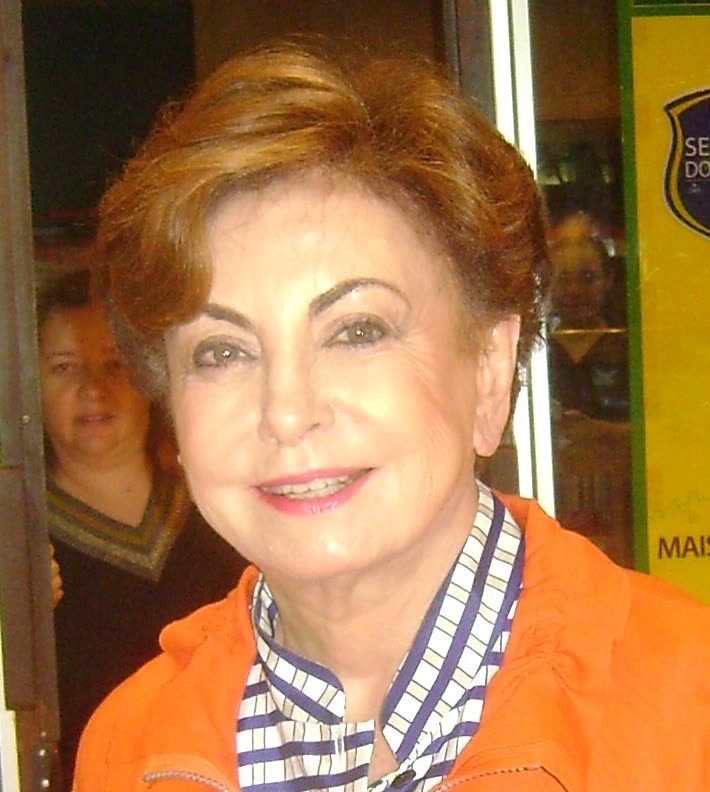
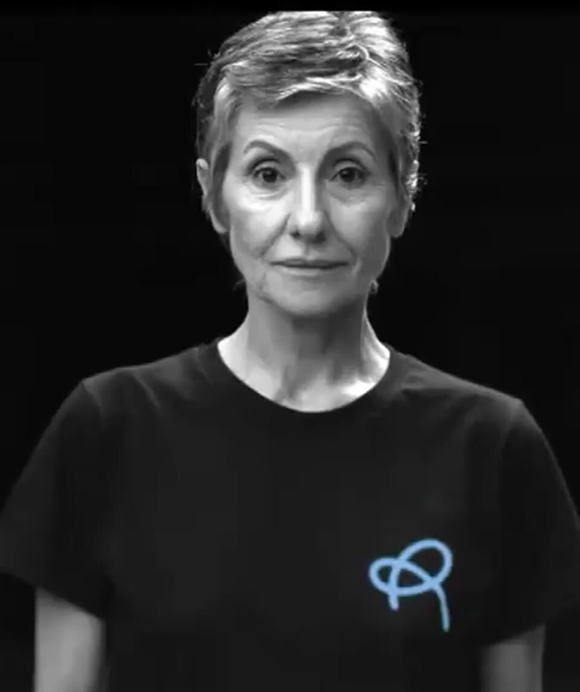
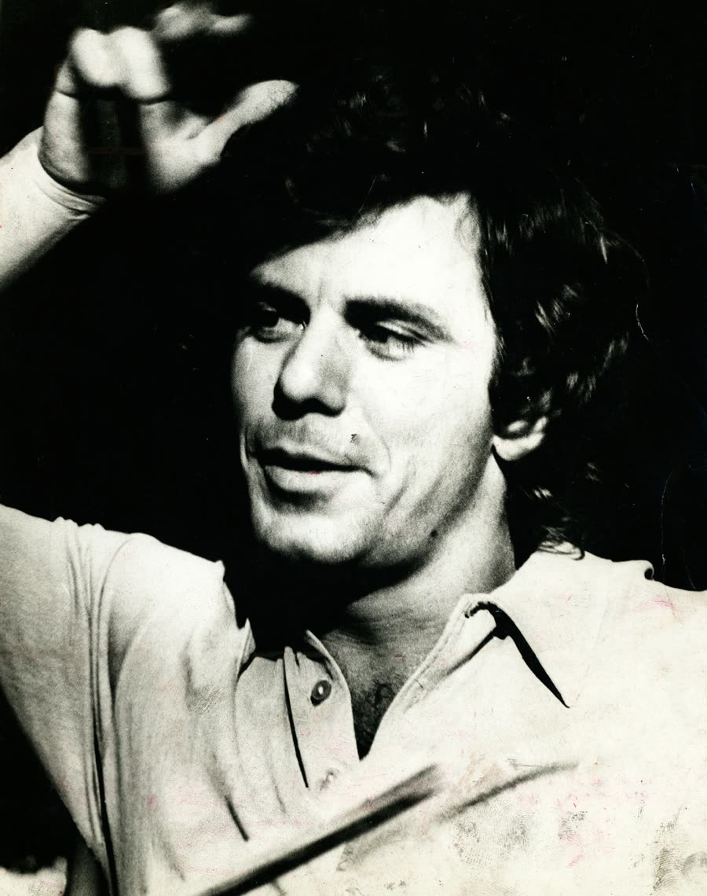

Quem matou Odete Roitman? A história completa do crime que parou o Brasil
De 1988 ao remake de 2025: os finais gravados em segredo, o tiro por engano, a banana para o Brasil e a virada que ninguém esperava.
Um tiro. Uma vilã caída. E um país inteiro diante da televisão, fazendo a mesma pergunta: quem matou Odete Roitman?
Em 1988, esse mistério parou o Brasil. E 37 anos depois, a mesma vilã voltou para aprontar tudo de novo. Esta é a história completa do crime mais famoso das novelas, do primeiro tiro ao final que dividiu o público em 2025.
Capítulo 1: a vilã

Em 1988, a TV Globo estreou Vale Tudo, escrita por Gilberto Braga, Aguinaldo Silva e Leonor Bassères. No centro da trama estava uma mulher rica, poderosa e sem um pingo de piedade: Odete Roitman, dona da empresa TCA, vivida por Beatriz Segall.
Odete era a vilã que o público amava odiar. Desprezava o Brasil, humilhava quem cruzasse o seu caminho e parecia sempre um passo à frente de todo mundo.
Ao redor dela, um verdadeiro ninho de cobras. Maria de Fátima, a ambiciosa vivida por Glória Pires. Marco Aurélio, papel de Reginaldo Faria. E a mulher dele, Leila, interpretada por Cássia Kis. Guarde bem esses nomes: um deles entraria para a história.
🧩 Jogue o caça-palavras da fofoca de hojeCapítulo 2: o tiro
A poucos capítulos do fim, o país levou um susto: Odete Roitman foi assassinada com um tiro. A vilã que parecia intocável estava fora do jogo.
De repente, o Brasil inteiro virou detetive. Nas casas, nas ruas e nas rodas de conversa, só se falava nisso. Cada família tinha o seu suspeito, e a pergunta virou assunto nacional. O segredo duraria pouco, mas foram capítulos de pura tensão.
Capítulo 3: o segredo mais bem guardado da TV
Os autores sabiam que aquele segredo valia ouro. Para evitar vazamentos, escreveram cinco versões do final, cada uma com um assassino diferente.
Nem o elenco sabia quem era o culpado. A cena decisiva foi gravada no mesmo dia em que foi ao ar, poucas horas antes de o país sentar na frente da televisão. Ninguém de fora podia contar o fim, porque quase ninguém de dentro sabia.
Capítulo 4: a revelação

Em 6 de janeiro de 1989, foi ao ar o último capítulo. O Brasil parou para assistir. E a verdade enfim apareceu: quem atirou foi Leila.
Ela tinha descoberto que o marido, Marco Aurélio, tinha um caso com Maria de Fátima. Cega de ciúme, foi atrás da rival. Mas errou o alvo. O tiro não era para Odete: Leila achou que estava atirando em Maria de Fátima.
A vilã mais temida da televisão morreu por engano. E Cássia Kis entrou para a história com uma das revelações mais lembradas da TV brasileira.
Capítulo 5: a banana para o Brasil

O final ainda guardava uma última provocação. Leila e Marco Aurélio fugiram do país num jatinho. Da janela, Marco Aurélio fez o gesto mais famoso da novela: deu uma banana para o Brasil.
A cena virou símbolo de uma época e é lembrada até hoje sempre que alguém fala em impunidade na ficção.
Capítulo 6: 37 anos depois
Em 2025, a Globo levou Vale Tudo de volta ao ar, numa nova versão escrita por Manuela Dias. Odete Roitman ganhou um novo rosto: Débora Bloch.
E o crime voltou junto. Desta vez, Odete foi baleada num quarto do Copacabana Palace, no Rio de Janeiro. A lista de suspeitos tinha cinco nomes: Maria de Fátima, agora vivida por Bella Campos; César, de Cauã Reymond; Celina, de Malu Galli; Heleninha, de Paolla Oliveira; e Marco Aurélio, de Alexandre Nero.
Se em 1988 foram escritos cinco finais, no remake foram gravados dez. Nem os atores sabiam qual deles iria ao ar.
Capítulo 7: Odete sempre volta
O último capítulo do remake foi ao ar em 17 de outubro de 2025. O público descobriu que Heleninha chegou a atirar, mas errou. Quem disparou contra Odete foi Marco Aurélio.
Só que havia um detalhe: Odete Roitman não morreu. Com a ajuda do fiel Freitas, ela foi socorrida às escondidas, operada em segredo e reapareceu no fim, fugindo de helicóptero. O recado era claro: Odete sempre volta.
E Marco Aurélio? Ele até repetiu a famosa banana da janela do jatinho. Mas, desta vez, o avião teve uma pane, precisou pousar, e ele acabou preso.
O final dividiu o público. Nas redes, Vale Tudo ficou entre os assuntos mais comentados, e muita gente reclamou da virada.
E você, qual final prefere?
Odete morta por engano, em 1988? Ou Odete viva e fugindo de helicóptero, em 2025? Conta pra gente no X ou nos comentários do vídeo: 88 ou 25?
Mandar esta história no WhatsAppA novela continua
Ler outras históriasFontes (cada fato confirmado em pelo menos dois veículos):
- IstoÉ
- Omelete
- AdoroCinema
- Folha de Pernambuco (Agência O Globo)
- Correio
- A Tarde
- Folha de Pernambuco (Estadão Conteúdo)
- O Povo
- CNN Brasil
- Omelete (final do remake)
- Diário do Nordeste
- O Liberal
- CNN Brasil (reação ao final)
Fotos
- Beatriz Segall: Braswiki, CC BY-SA 3.0, via Wikimedia Commons
- Cássia Kis: ONU Brasil, CC BY 3.0, via Wikimedia Commons
- Reginaldo Faria (1971): Fundo Correio da Manhã, domínio público, via Wikimedia Commons
- Débora Bloch: Reginaldo Teixeira, CC BY 2.0, via Wikimedia Commons
- Copacabana Palace: Wilfredor, CC0, via Wikimedia Commons
- Glória Pires (na arte de capa): Sebástian Freire, CC BY-SA 2.0, via Wikimedia Commons
- Alexandre Nero (na arte de capa): 26º Prêmio da Música Brasileira, CC BY 2.0, via Wikimedia Commons
- Arte de capa: Novela da Fofoca